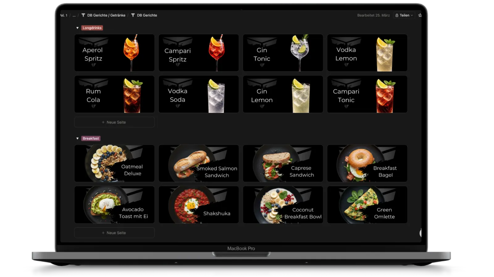
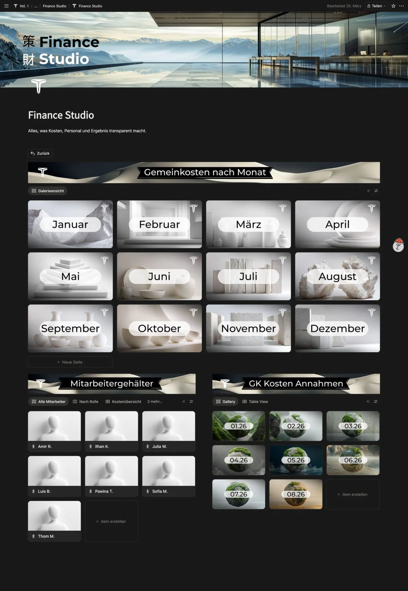
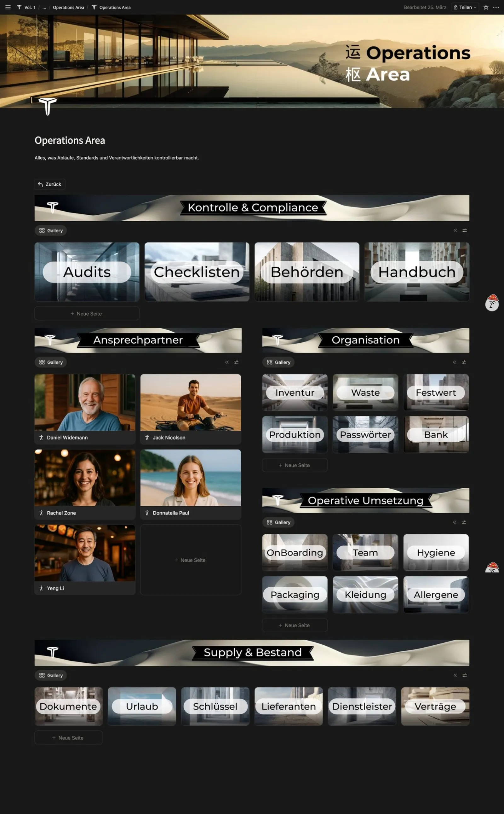
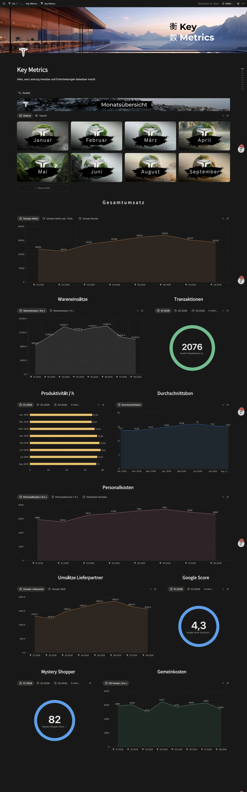
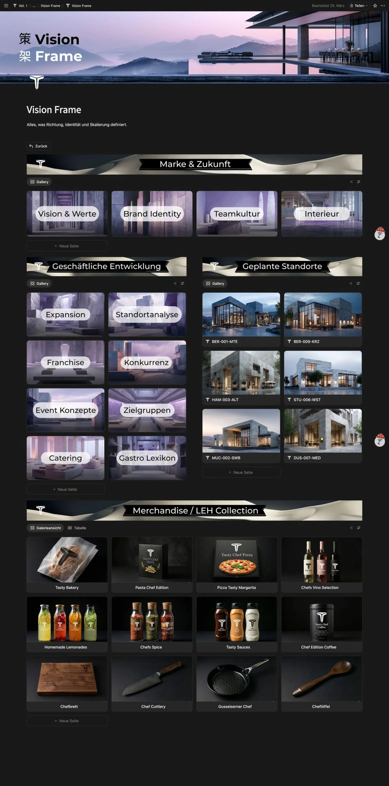

Notion AIBackoffice
Der Ort, an dem dein Betrieb zusammenläuft: Abläufe, Wissen, Zahlen, Team.
FoodQuartier
Küche im Griff, Marge gesichert.
Inventar, Zutaten, Rezepte und Wareneinsatz sind in einem System miteinander verbunden. Ändert sich der Preis einer Zutat im Einkauf, aktualisiert sich die Kalkulation jedes betroffenen Gerichts sofort.

Übersicht1 / 6
Drinksquartier
Bar-Kalkulation auf Knopfdruck.
Das Drinksquartier bringt die Logik deiner Küche an die Bar. Es beendet das Schätzen von Preisen und verbindet Einkauf, Rezeptur und Verkaufspreis.
Übersicht1 / 6
FinanceStudio
Personal- und Gemeinkosten erfassen.
Schluss mit dem Blindflug bis zur nächsten BWA. Das Finance Studio verbindet deine operativen Kosten aus Küche und Bar mit deinen Fixkosten zu einem klaren Bild.

Übersicht1 / 4
OperationsArea
Abläufe, die ohne dich funktionieren.
Die Operations Area bündelt alles, was deinen Betrieb am Laufen hält: Standards, Verantwortlichkeiten, Lieferanten, Bestände, Hygienepläne, Schichtwissen. Eine zentrale Stelle, an der jeder nachsehen kann.

Übersicht1 / 21
Kontrolle & Compliance
Organisation
Operative Umsetzung
Supply & Bestand
KeyMetrics
Entscheidungen, die auf Daten basieren.
Key Metrics zieht die wichtigsten Fäden aus allen Bereichen deines Backoffices zusammen. Eine verdichtete Übersicht, die dir sofort zeigt, wo dein Betrieb steht.

Übersicht1 / 2
VisionFrame
Strategie, die Wachstum schafft.
Der Vision Frame schützt dich davor, dich im operativen Tagesgeschäft zu verlieren. Er gibt deinem Handeln eine Richtung.

Übersicht1 / 13
Marke & Zukunft
Geschäftliche Entwicklung
Wir bauen esfür deinen Betrieb.
Das Backoffice kennst du jetzt. Wir bauen dein komplettes System, zugeschnitten auf deinen Betrieb. In wenigen Wochen läuft es, und dein Team bekommt ein Onboarding.
Du brauchst auch eine Website? Die bauen wir bei Tasty Studios. Referenzen ansehen